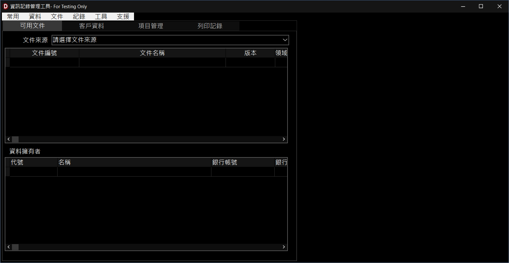

系統架構
 資訊紀錄管理工具架構圖
功能說明：
資訊紀錄管理工具架構圖
功能說明：
- 資訊紀錄管理工具首頁：軟體的主要視窗。

表格套印視窗
- 常用：匯集常用的套印功能，日常的套印工作在這裏就可以全部完成。
- 文件引用：可提供文件設定檔引用及分享，有文件設定檔，，其他使用者若有相同文件用需求，只要匯入文件設定檔，就能讓系統支援該文件的資料輸入、套印及後續資料分析運用。
- 基本資料：管理使用者的基本資料及金融帳號，以提升資料輸入的效率。
- 印表機：指定用於文件套印的印表機、列印紙匣、列印方向及邊界設定等功能。
- 匯入套印：以匯入檔案的方式，進行資料套印工作。
- 資料：管理輸入、套印所需的相關資料。
- 基本資料：管理軟體使用者的基本資料及金融帳號，，以提升資料輸入的效率。
- 客戶管理：使用者以外的外部人員，例如收信人員。
- 內部人員：使用者以外的內部人員，在輸入時可以引用相關資料。
- 物品管理：例如辦公室文具、電腦軟硬體、物品品名項目、會計科目及任何需要帶出物品資料，都可在此建立相關資料。
- 資料引用：用於取得外部資料，例如將「客戶資料」匯入本系統。
- 文件：將文件納入管理、設計文件套印內容、安排資料處理方式及設計資料輸入介面。
- 文件管理：文件納管時，建立文件領域(所屬機關、來源及類型等資訊。
- 套印內容設計：設定實際套印於文件上面的字串、圖案等內容，可設定大小、顏色、數量及位置。
- 資料配置：使用者輸(匯)入的資料，進行資料配置，例如將日期組成為年、月、日3個欄位，或同一文件有多個日期，輸入1次可多個欄位取用。
- 資料處理：使用者輸(匯)入的資料後。進行資料處理，例如將日期切割為年、月、日3個部份，或者將「1000」轉為「新臺幣壹仟元整」。
- 輸入介面設計：
- 功能說明：
- 增加欄位：主要用於查詢，以輸入代號(如銀行帳號、客戶編號)的方式同時取得多種資料。
- 輔助輸入：如自動帶入日期、帳號、提供關鍵字搜尋，保留輸入資料...等。
- 設定各式操作強化及輔助資料輸入，如限定輸入數字、強制轉換為大寫。
- 查詢設計：指定以某個客戶代號或關鍵字，取得相關資料或是合併欄位資料。
- 版面設計：當輸入項目少於20個項目時，採用系統預設的一欄式輸入方式即可，但如果表格輸入項目超過20個將文產生輸入不便的問題，或者使用者想要自行設計輸入介面，均得由此功能進行輸入版面設計。
- 文件引用：可提供文件設定檔引用及分享，有文件設定檔，，其他使用者若有相同文件用需求，只要匯入文件設定檔，就能讓系統支援該文件的資料輸入、套印及後續資料分析運用。
- 紀綠：將套印後的資料保留，以利後續分析管理。
- 領用登錄：對於有編號的文件，可先將票號登錄，系統於套印時，自動將套印資料寫入指定的文件編號，有利於後續資料分析管理。
- 套印記錄：針對不同來源文件，提供相同的套印記錄查詢及轉檔，如某個月的應付票款。
- 支援：尋求協助以便執行套印作業。
- InfoRec 首頁：可連結至本工作室網站，取得最新的操作說明。